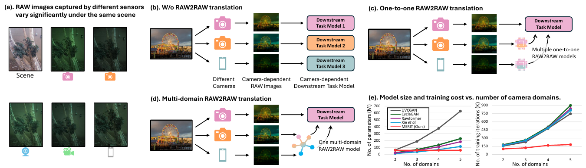
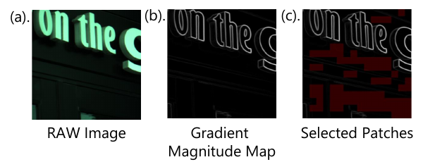
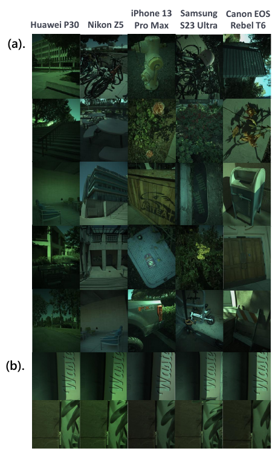
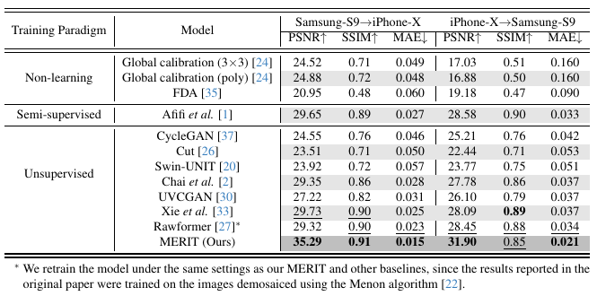
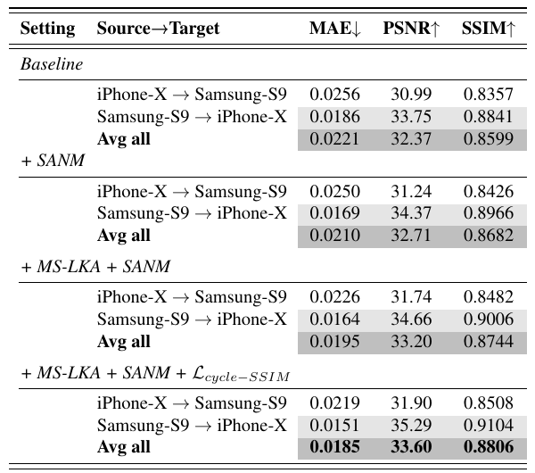
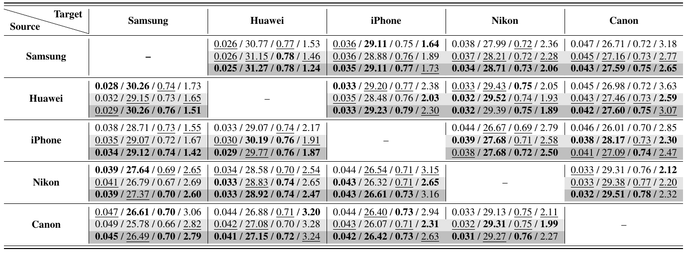
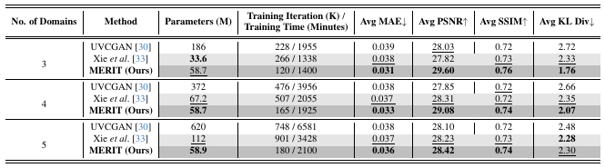

MERIT: Multi-domain Efficient RAW Image Translation

读前说明：本页属于专项「手机照片 → 相机画质：细节与质感迁移」（入口 phone2camera-2026）。专项的目标是把 iPhone 照片（优先 Bayer RAW）在细节和质感上变成目标相机的效果：颜色用 DNG 矩阵做物理对齐，生成模型只补高频纹理，最后交给目标相机的 ISP 出图。MERIT 本身做的是 RAW 域的风格转换，不提升画质。它对专项有三点用处：一是 MDRAW 数据集，它同时包含 iPhone 的 Bayer RAW 和尼康 Z5、佳能 T6 两台可换镜头相机的 RAW，并且有同场景配对；二是 SANM 这种「噪声方差—亮度曲线」的对齐方式，可以直接拿来当噪声质感的评测指标；三是「一个生成器 + 目标相机风格码」的多域条件生成框架。读者打算先用 MDRAW 做实验，所以 §2.5 把 MDRAW 的每条事实都对照论文、代码和发布的压缩包核实过一遍，§6 给出 iPhone→尼康 Z5 实验的具体方案。
任务
多域 RAW→RAW：任意源相机的 4 通道打包 RAW，转成任意目标相机的 RAW。训练只用无配对数据，测试用同场景配对 patch 算 MAE / PSNR / SSIM / KL。
方法
StarGAN v2 骨架：生成器 G、带逐域输出头的风格编码器 E、逐域判别器 D。在此之上加噪声损失 SANM、解码器里的 MS-LKA 门控、循环 SSIM 损失。代码里还有一个论文没写的逐相机 4 通道增益。
数据 MDRAW
五台设备：S23 Ultra、华为 P30、iPhone 13 Pro（表格里写的是 13 Pro Max）、尼康 Z5、佳能 T6。无配对 519 张，配对 57 组共 285 张。配对 patch 由 LoFTR + RANSAC 选点，裁成 256×256 打包 RGGB，只做平移对齐。
代码现实
官方仓库可以跑通完整管线，但有四处会直接影响你的实验：评测参考图用 GT 挑、checkpoint 按测试集选、默认噪声 profile 配错相机、配对 patch 不做几何校正。四处都在 §4 给了行号和改法。
1. 出发点 (Motivation)
同一个场景，换一台相机拍出来的 RAW 就不一样。论文用理想成像模型说明原因：
—— 翻译: 像素 x 在颜色通道 c 上的读数，等于场景反射光谱 S 乘上光源光谱 L，再用这台相机通道 c 的光谱灵敏度 R_c 加权，然后对可见光波段 ω 积分。换相机时 S 和 L 不变，变的是 R_c，所以同一束光在两台相机里会被「记成」不同的三个数。
除了光谱灵敏度，实际的差别还包括噪声（像素大小、读出电路、ISO 增益）、位深和黑/白电平、CFA 排列，以及镜头带来的锐度和暗角。后果是：在某台相机的 RAW 上训好的下游模型（RAW 检测、RAW 超分、RAW 去噪），换一台相机就会掉点。
已有的 RAW2RAW 工作都是一对一的：Afifi & Abuolaim 的半监督方法（arXiv:2106.13883）需要一小批用色卡标定出来的配对锚点；Rawformer（arXiv:2404.10700，ECCV 2024）和 Xie et al.（ACM MM 2024）去掉了配对，但仍然是一对相机一个模型。N 台相机就要 N(N−1)/2 个模型，Table 5 里 UVCGAN 的参数量从 3 个域的 186M 涨到 5 个域的 620M。
MERIT 的切入点有三个：
- 多域：直接搬 StarGAN v2（arXiv:1912.01865）的范式，一个生成器加一个「目标相机风格码」，参数量基本不随相机数增长。
- 噪声显式化：作者观察到域差异里相当一部分是相机自己的噪声模式，单靠对抗训练学不准，所以加了一项损失，直接对齐「平坦区噪声方差随亮度变化」的那条曲线。
- 数据：之前没有同时含多台相机无配对 RAW 和同场景配对 RAW 的公开数据集，于是自己采了 MDRAW。
对本专项来说，第 3 点最重要。专项调研指出，已精读的 12 篇里没有一篇的监督目标是目标相机的 RAW：DPED、PyNET、ISPW 这些工作的目标都是单反的机内 JPEG。MDRAW 正好补上这一格：iPhone 和尼康 Z5 在同一场景下的 Bayer RAW 都有。它的问题在规模和对齐精度，§2.5 和 §6 会展开。
RAW2RAW
把相机 A 的原始传感器数据，转成「看起来像相机 B 拍的」原始传感器数据，输出仍然是线性、未去马赛克的 RAW。
打包 RGGB
把 H×W 的拜耳马赛克按 2×2 拆成 R、Gr、Gb、B 四个半分辨率平面，叠成 4 通道张量。256×256 的打包块对应原图 512×512 的范围。
域 / 风格码
这里一个「域」就是一台相机。风格码 s 是一个 64 维向量，由风格编码器从一张该相机的参考图里提取，告诉生成器「往哪台相机转」。
StarGAN v2
CVPR 2020 的多域图像转换框架：一个生成器、一个风格编码器、一个判别器，靠 AdaIN 把风格码注入生成器。MERIT 的代码就是在它的官方实现上改的。
AdaIN
自适应实例归一化：先把特征图每个通道标准化，再用风格码算出的 γ、β 重新缩放和平移，相当于按目标风格「重新上色」。
泊松-高斯噪声
RAW 噪声的常用模型：方差 = α·亮度 + β。α 项来自光子散粒噪声，越亮越大；β 项来自读出电路，是一个固定的底噪。
MAD
中位数绝对偏差。σ ≈ MAD / 0.6745，是对离群点不敏感的标准差估计，常用于在图像里估计噪声。
LoFTR
CVPR 2021 的无检测器稠密特征匹配（arXiv:2104.00680），用 Transformer 直接在两张图之间找对应点，对弱纹理区域比 SIFT 稳。
RANSAC 单应
反复随机抽 4 对匹配点拟合平面投影变换（单应矩阵），留下与之一致的「内点」。场景近似平面或很远时才成立。
R1 正则 / EMA
R1：惩罚判别器在真图上的梯度范数，稳定 GAN 训练。EMA：对生成器权重做滑动平均，评测时用平均后的副本。两者都继承自 StarGAN v2。
2. 方法 (Method)

2.1 框架：把 StarGAN v2 改成吃 4 通道 RAW
记源相机 a 的打包 RAW 为 \(I^a\)，目标相机为 b。生成器读入 \(I^a\) 和目标风格码，输出目标相机的 RAW：
—— 翻译: 先从目标相机 b 的任意一张参考图里提取风格码 s_b（编码器共享主干，每台相机有一个自己的输出头 E_b），再让生成器以 s_b 为条件，把源图翻译成「相机 b 会拍出来的样子」。
训练时同时优化以下几项（论文 Eq. 4–8）：
—— 翻译: 对抗项要求判别器在「相机 b」这一路输出上认为生成图是真的；风格重建项要求从生成图里再提一次风格码，结果要和输入的风格码一致，防止生成器无视风格码。
—— 翻译: 把翻译结果再用源相机自己的风格码 s_a 翻回去，应该回到原图。L1 管亮度数值，SSIM 管局部结构。这一对约束保证「只换相机、不换内容」。
类比：G 像一个通用口译员，风格码 s 相当于告诉他「用哪个地方的口音说」。编码器 E 的作用是听一段某地人的录音（参考图），总结出这个口音的特征。循环一致相当于把翻译稿再翻回原文，用来检查有没有漏词或加词。
代码里的三个网络基本是原版 StarGAN v2：生成器是 4 次下采样（256→16）、2 个瓶颈残差块、4 次上采样，解码器用 AdaIN 注入风格码，并加了 U-Net 式的加性跳连（repo/core/model.py:L192-L247）。风格编码器是 6 级下采样残差块，后面接每个域一个 Linear(512, 64) 输出头（L249-L280）。判别器结构与编码器相同，最后一层卷积输出 num_domains 个 logit，取目标域那一个（L283-L307）。
论文没提的是生成器两端的一组逐相机通道增益：
repo/core/model.py:L20-L36 — 每台相机 4 个可学习增益（softplus 保正，初值 1），G 入口除以源相机增益、出口乘以目标相机增益
class ChannelGainPerDomain(nn.Module):
def __init__(self, num_domains: int, init_gain=1.0, eps=1e-6):
super().__init__()
self.num_domains = num_domains
self.eps = eps
raw_init = torch.log(torch.expm1(torch.tensor(init_gain, dtype=torch.float32)))
self.raw_weight = nn.Parameter(raw_init.expand(num_domains, 4).clone()) # [D,4]
def _get_gain(self, d_idx: torch.Tensor):
g = F.softplus(self.raw_weight[d_idx]) + self.eps # [B,4]
return g.view(-1, 4, 1, 1)
def forward(self, x, domain):
return x * self._get_gain(domain)
def inverse(self, x, domain):
return x / self._get_gain(domain)
Generator.forward 在进入卷积前调用 chan_gain.inverse(x, y_org)，在输出处调用 chan_gain(x, c_t)（model.py:L227-L228、L244-L245）。效果相当于给每台相机学一组固定的 R/Gr/Gb/B 对角增益：网络先把源图「除掉」源相机的平均通道比例，最后再乘上目标相机的。它和白平衡增益的形式一样，但每台相机只有一组，不随场景光源变化，也表达不了 3×3 矩阵里的通道交叉项。对专项来说，这正是物理颜色映射（DNG 矩阵 + 场景白点）应该接进来的位置。
参数量核对：照 model.py 的层定义逐层解析计数（img_size=256、style_dim=64），5 个域时 G = 37.81M（其中原版 StarGAN v2 生成器 33.89M，MS-LKA 门控 3.92M），E = 21.02M，D = 20.85M。G+E = 58.73–58.82M（2–5 个域），和论文 Table 5 的 58.7M 对得上，说明论文的参数量只算了 G 和 E，没算判别器。多一个域只多一个 64 维输出头（约 3.3 万参数）和 4 个增益，这一点代码支持「参数量几乎不随域数增长」的说法。
2.2 SANM：对齐「平坦区噪声方差—亮度」曲线
RAW 处在线性光域，噪声可以用泊松-高斯模型描述（论文 Eq. 2，引自 Foi et al. 2008）：
—— 翻译: 观测值 x 的方差，等于真实亮度 z 乘以斜率 α（散粒噪声，越亮越大），再加一个常数 β（读出噪声）。每台相机、每个 ISO 都有自己的 (α, β)，画出来就是一条「方差随亮度上升」的直线。
SANM 不去拟合 α、β，而是直接比较这条曲线的经验版本。做法是：把图切成不重叠的小块，用 Sobel 梯度只留下最平的那些块（平坦块里的起伏基本都是噪声），每块算均值 \(\mu_i\) 和 MAD 方差 \(\sigma_i^2\)，按 \(\mu_i\) 落进 100 个等宽亮度箱，箱内取方差平均，得到每个通道一条「噪声直方图」\(H \in \mathbb{R}^{C\times B}\)。目标相机的 \(H_{real}\) 事先用它的真实图算好，存成查找表。损失为（论文 Eq. 3）：
—— 翻译: 对 4 个通道、100 个亮度箱逐个比较「生成图在这个亮度上的平均噪声方差」和「目标相机在这个亮度上的平均噪声方差」，取绝对差再平均。生成图在某个箱里没有平坦块时，这个箱不计入。

类比：想判断两台收音机的底噪是否一样，要在没有节目的频段听，因为节目（纹理）会盖住底噪。SANM 先找出画面里「没节目」的平坦区，再按亮度分档比较底噪的大小。
数值例子（假设数值）：生成图里有一块平坦块，均值 0.045，落进第 5 个箱 [0.04, 0.05)；它的 MAD 标准差为 0.004，方差 1.6×10⁻⁵。目标相机在这个箱上的 profile 是 6×10⁻⁶，这一块就贡献 |1.6×10⁻⁵ − 6×10⁻⁶| = 10⁻⁵ 的误差，梯度会推动生成器把这一亮度上的平坦区压得更干净。
repo/core/solver.py:L759-L795 — NoiseHistogramLoss.forward：16×16 块、每图每通道按梯度分位数保留 30% 平坦块、按亮度分箱、只在生成图有样本的箱上比较
def forward(self, x):
B, C, H, W = x.shape
Ct, Nb = self.target_profiles.shape
if Ct == 1 and C > 1:
tgt = self.target_profiles.expand(C, Nb)
elif Ct != C:
tgt = self.target_profiles.mean(dim=0, keepdim=True).expand(C, Nb)
else:
tgt = self.target_profiles
patches = self._unfold(x.float())
means = patches.mean(dim=-1)
vars_ = self._patch_var(patches)
g = self._sobel_mag(x.float())
gmean = self._unfold(g).mean(dim=-1)
if self.keep_ratio < 1.0:
q = torch.quantile(gmean, self.keep_ratio, dim=-1, keepdim=True)
mask = gmean <= q
else:
mask = torch.ones_like(gmean, dtype=torch.bool)
means = torch.where(mask, means, torch.full_like(means, -1.0))
vars_ = torch.where(mask, vars_, torch.zeros_like(vars_))
sum_vars = x.new_zeros(B, C, Nb)
counts = x.new_zeros(B, C, Nb)
idx = torch.bucketize(means, self.bin_edges, right=True) - 1
for b in range(B):
for c in range(C):
valid = (idx[b, c] >= 0) & (idx[b, c] < Nb) & mask[b, c]
if valid.any():
ii = idx[b, c, valid].long()
sum_vars[b, c].index_add_(0, ii, vars_[b, c, valid])
counts[b, c].index_add_(0, ii, torch.ones(ii.numel(), device=x.device, dtype=sum_vars.dtype))
hist = sum_vars / (counts + self.eps)
bin_mask = counts > 0
diff = (hist - tgt.unsqueeze(0)).abs() * bin_mask
per_sc = diff.sum(dim=-1) / bin_mask.sum(dim=-1).clamp_min(1.0)
loss = per_sc.mean()
return loss
对照 Eq. 3，代码有几处细节值得注意：
- 梯度只流到每块里的两个像素。 方差用的是 MAD（
solver.py:L750-L755，median再对|x − median|取median）。torch.median的反向传播只把梯度给被选中的那个元素，所以每个 16×16 平坦块里，只有「中位数像素」和「MAD 对应的像素」拿得到梯度。分箱（bucketize）和平坦块掩码（quantile）本身不可导。这项损失能推动的只是选中像素的噪声幅度，信号很稀疏。 - 数值量级很小。 我从 MDRAW 压缩包开头取了 5 个佳能测试 patch（§2.5），按代码同样的 16×16 块和 MAD 估计 G 通道最平的 30% 块：块均值 0.04–0.10，方差中位数在 1.7×10⁻⁶ 到 1.9×10⁻⁵ 之间。所以 \(\mathcal{L}_{noise}\) 的取值在 10⁻⁶–10⁻⁵ 量级，而同一个总损失里 λ=10 的循环 L1 项是在 [−1,1] 尺度上算的。这只是对损失大小的观察。损失小不等于梯度小（见上一条），这一项实际起了多大作用，需要用多种子消融来回答（§5）。
- 数据很暗，用到的箱很少。 这 5 个 patch 的通道均值在 0.013–0.087 之间。100 个等宽箱里，真正有样本的大多是前 10 个左右，高亮度段的 profile 基本靠插值。
- 归一化与 Eq. 3 略有不同。 代码先对每张图、每个通道在「有效箱」上求平均，再对图和通道求平均（
L792-L794）；Eq. 3 是除以总箱数 B·C。 - 一台相机只有一条曲线。
2_build_noise_profile.py把一个目录下所有 npy 合在一起统计（L75-L116），空箱用线性插值补齐，再做一次 [1,2,1] 平滑（L53-L73）。它不区分 ISO，得到的是这台相机在整个无配对集上各种 ISO 混合后的平均曲线。 - 选块阈值前后不一致。 建 profile 时用的是全数据集统一的梯度分位数阈值（
2_build_noise_profile.py:L32-L51），训练时则对每张图各取 30%（solver.py:L773-L775）。纹理很多的图也会被强行选出 30% 的「平坦块」。
2.3 MS-LKA：风格码调制的多空洞深度卷积门控
论文的写法是：输入特征 \(F_{in}\) 走三路不同空洞率的大核深度卷积，得到 \(F_1, F_2, F_3\)，拼接后用 1×1 卷积融合；风格码 s 经过一个小 FFN 得到通道权重 \(A_s\)，然后逐元素相乘：
—— 翻译: 先在三种视野大小上看一遍特征，合并成一张多尺度特征图；再由「目标相机是谁」决定每个通道放大多少。Fig. 2(e) 还画了一条残差：结果最后加回输入。
代码实现的是另一个式子（repo/core/model.py:L72-L81，三路卷积核 7×7，dilation 为 1/4/9，见 L152）：
—— 翻译: 多尺度卷积的结果不直接作为输出特征，而是过 sigmoid 变成一张 0–1 的「空间门」；风格码同样过 sigmoid 变成「通道门」；两门相乘后用来放大原特征 x，最多放大到 2 倍。也就是说，它决定的是「原特征在哪里、哪些通道要加强」，并不产生新的特征。
repo/core/model.py:L72-L81 — SpatialKernelGateCond.forward：空间门 × 风格通道门，作用为 x·(1+att)
def forward(self, x, s):
if self.multi:
h = torch.cat([b(x) for b in self.branches], dim=1)
att_sp = torch.sigmoid(self.fuse(h)) # [B,C,H,W]
else:
att_sp = torch.sigmoid(self.dw(x)) # [B,C,H,W]
att_ch = torch.sigmoid(self.style_fc(s)).view(s.size(0), -1, 1, 1) # [B,C,1,1]
att = att_sp * att_ch
return x * (1.0 + self.att_scale * att)
7×7 核配 dilation 9，在该层分辨率上的感受野是 55×55。这个门被插在每一个解码块（2 个瓶颈块 + 4 个上采样块）第二个卷积之后（model.py:L182-L183），一共新增 3.92M 参数，占生成器的 10%。作者在 L67-L68 把风格 MLP 的最后一层零初始化，本意是让通道门一开始恒为 0.5。但 Solver.__init__ 随后对所有非 EMA 网络调用了 he_init（solver.py:L94-L97），把这层重新按 Kaiming 初始化，零初始化实际不生效。
类比：AdaIN 相当于整体调一遍色，MS-LKA 则像在不同大小的窗口里看了一圈之后，决定「这里的边缘该加强一点」。加强哪些通道由目标相机决定。
2.4 总损失：论文 Eq. 9 与代码实际优化的目标
论文给出的总目标是：
—— 翻译: 噪声对齐、对抗、循环 L1、循环 SSIM 四类约束加权求和。正文给的权重是 λ_cyc = 10、λ_noise = 1、λ_cyc^SSIM = 0.1，但同一段又列出了 Eq. 9 里没有的 λ_reg、λ_sty、λ_ds、λ_id。
代码里生成器实际优化的是：
—— 翻译: 比 Eq. 9 多了三样：风格重建 L_sty；「多样性敏感」项 L_ds，前面是减号，奖励两张不同参考图产生不同输出，权重从 5 在 10 万步内线性降到 0；恒等项 L_id 和 L_id-SSIM，要求「目标相机 = 源相机」时输出等于输入。判别器另有 R1 正则（λ_reg = 1）。
repo/core/solver.py:L656-L667 — 生成器总损失的实际组成（λ 默认值见 main.py:L114-L129）
loss_noise = x_real.new_zeros([])
if (noise_loss_fn is not None) and (getattr(args, 'lambda_noise', 0.0) > 0):
loss_noise = noise_loss_fn(x_fake, y_trg)
loss = (loss_adv
+ args.lambda_sty * loss_sty
- args.lambda_ds * loss_ds
+ args.lambda_cyc * loss_cyc
+ getattr(args, 'lambda_noise', 0.0) * loss_noise
+ lambda_id * loss_id
+ getattr(args, 'lambda_cyc_ssim', 0.0) * loss_cyc_ssim
+ getattr(args, 'lambda_id_ssim', 0.0) * loss_id_ssim)
多样性项来自 StarGAN v2，那里的目标是「同一张脸可以换多种发型」。放在 RAW 转换里就有点别扭：同一台相机对同一场景的响应应该是确定的，不需要多样性。好在它在 10 万步（ds_iter，main.py:L128）后衰减为 0（solver.py:L283-L285），后一半训练不受影响。
2.5 MDRAW：设备、数量、配对流程（论文 × 代码 × 压缩包核实）

这一节逐条核对。「论文」指 arXiv v1（含补充材料，与 CVF 页面上的补充 PDF 内容相同）；「代码」指官方仓库 HEAD bfe5c6e；「压缩包」指 README 链接的 Google Drive 文件。我只用 HTTP Range 取了前 8 MB 查看目录，没有下载整个数据集。
| 项目 | 论文说法 | 代码 / 实物核实 | 对实验的影响 |
|---|---|---|---|
| iPhone 机型 | 正文 §3 和补充 §6.2 写 iPhone 13 Pro；Table 1、Fig. 5/6 的标签和补充 §9 正文写 iPhone 13 Pro Max（传感器 Sony IMX703） | 代码只有目录名 iphone，无机型信息 |
13 Pro 与 13 Pro Max 的相机硬件完全相同（9to5Mac、PetaPixel），主摄 12MP、26mm 等效、1.9 µm 像素。这处不一致对传感器没有影响；IMX703 这个型号我没有独立核实 |
| 其他设备 | S23 Ultra（ISOCELL HP2）、华为 P30（Sony IMX650 Exmor RS）、尼康 Z5（Sony IMX128）、佳能 EOS Rebel T6（DIGIC 4+） | 佳能 T6 的「DIGIC 4+」是图像处理器，不是传感器；T6 的传感器是 18MP APS-C CMOS，5184×3456（Canon、DPReview）。华为 P30 主摄是 40MP RYYB 滤色阵列（Android Authority），代码仍把它当 RGGB 打包 | 尼康 Z5 是 24.3MP 全画幅，6016×4016、5.9 µm 像素（B&H、Photography Life）。Table 1 写的 IMX128 未核实。论文没有给尼康、佳能用的是哪支镜头 |
| 无配对张数 | S23U 81、P30 119、iPhone 98、Z5 114、T6 107，共 519（Table 1） | 1_unpaired_split.py:L20-L36 把每张 2000×1500 的打包图切成 7×5 = 35 块 256²，边缘余下的 208 和 220 像素丢弃 |
iPhone 约 3,430 块，尼康约 3,990 块，规模很小 |
| 配对组数 | 285 张 / 57 组（引言），即每组 5 台设备各一张；「在受控条件下采集」 | 代码靠同名文件把不同相机的同一场景对上（0_paired_process.py:L468），尼康和佳能整图旋转 180°（L259-L265）。压缩包里的场景编号是纯数字（10、14、16、24、38……） |
论文没有说明三脚架、拍摄位置、焦距、ISO、曝光、是否同时触发。「受控条件」具体指什么无从得知 |
| RAW 是否 Bayer | 「All RAW files are stored in DNG format」 | 读的是 rawpy 的 raw_image_visible；无配对脚本遇到非 2D 数据直接跳过（0_unpaired_process.py:L256-L258），配对脚本的 pack_rggb 遇到非 2D 抛错（0_paired_process.py:L95-L96）。iPhone 的黑电平 528、白电平 4095（12 bit）写死在代码里，没有从文件读取（L246） |
进入训练和测试的 iPhone 数据一定是 Bayer 马赛克，不是去马赛克后的线性 DNG。但黑/白电平和 CFA 排列都是写死的，换成你自己的 DNG 时必须重新读元数据核对 |
| 分辨率归一化 | 「center-crop and downsampling to a fixed resolution」 | 打包后按「覆盖」缩放，再中心裁到 2000×1500（相当于 4000×3000 拜耳），只做 INTER_AREA 下采样（L115-L144） |
尼康 Z5 打包后是 3008×2008，缩放约 0.747 倍；iPhone 2016×1512 只缩到约 0.992。尼康域的噪声和细节都是降采样之后的，不是原生像素 |
| 配对流程 | LoFTR 稠密匹配 → RANSAC 单应验证 → 空间 NMS → 同步裁 256×256 RGGB，「在匹配点处几何对齐」 | kornia LoFTR（outdoor 权重，置信度 ≥ 0.2，L18-L27）在伪 RGB 的灰度图上匹配；伪 RGB 是线性值直接 ×255 转 uint8，没有 gamma，也没有白平衡（L357-L361）。cv2.findHomography（重投影阈值 4 px，3000 次迭代）只用来挑内点，求出的单应矩阵直接丢掉（L175-L181）。NMS 中心距 ≥ 204 px。裁块以每个内点为中心，只做平移 |
两台设备之间的尺度差（视场不同）、旋转、视差都没有校正。暗部在 uint8 里只剩十几个灰阶，匹配点会偏向亮区和强边缘 |
| 图块大小 | 256×256 RGGB | 打包域 256×256，即拜耳域 512×512；存成 float32 (4,256,256)、取值 [0,1] 的 npy |
10 个相机对目录各自独立匹配，同一场景在不同相机对里得到的 patch 位置和数量都不同 |
| 训练/测试划分 | 「trained on unpaired images and evaluated on paired image sets」 | 训练集 = 全部无配对；测试集 = 全部配对 patch（main.py:L163-L166）；没有验证集，训练时每 5000 步在测试集上评一次，按 MAE 保存最佳模型（solver.py:L361-L370），评测默认加载这个最佳模型（main.py:L155） |
划分方式是「无配对采集 vs 配对采集」，不是按场景随机切。无配对图与配对场景有没有重叠，论文没说 |
| 发布形式 | README 给一个 Google Drive 链接 | 单个文件 odb-full-v1-processed.tar-001.zst，34,906,333,929 字节（Drive 显示 33G）。前 8 MB 解出的 tar 目录以 processed/test/samsung_canon/canon/38_p0000_p000.npy 等开头，文件都是 1,048,704 字节的 float32 (4,256,256) |
至少包含预处理好的测试 patch。是否同时包含原始 DNG、sRGB 和无配对集，只看开头无法确认；文件名里的 -001 像是分卷压缩的第一卷，但 README 只给了这一个链接 |
| 许可 | — | 仓库没有 LICENSE 文件；核心源码文件头是 StarGAN v2 的 CC BY-NC 4.0 | 只能做非商业用途 |
配对裁块的核心代码如下。两张图的裁剪框各自以匹配点为中心，只有在越界时才一起平移同样的 dx、dy：
repo/preprocess/0_paired_process.py:L198-L211 — 以匹配点为中心同步裁 256×256，只做平移，不用单应矩阵 warp
def crop_pair_shift_sync(arr1, cx1, cy1, arr2, cx2, cy2, size=PATCH_RGGB):
H1, W1 = arr1.shape[:2]; H2, W2 = arr2.shape[:2]; s = int(size)
if W1 < s or H1 < s or W2 < s or H2 < s:
raise RuntimeError("Image smaller than patch size; check TARGET size.")
x01 = int(round(cx1)) - s // 2; y01 = int(round(cy1)) - s // 2
x02 = int(round(cx2)) - s // 2; y02 = int(round(cy2)) - s // 2
dx_lo = max(-x01, -x02); dx_hi = min(W1 - s - x01, W2 - s - x02)
dx = 0 if dx_lo <= 0 <= dx_hi else (dx_lo if abs(dx_lo) < abs(dx_hi) else dx_hi)
dy_lo = max(-y01, -y02); dy_hi = min(H1 - s - y01, H2 - s - y02)
dy = 0 if dy_lo <= 0 <= dy_hi else (dy_lo if abs(dy_lo) < abs(dy_hi) else dy_hi)
def clamp(v, lo, hi): return lo if v < lo else (hi if v > hi else v)
x1 = clamp(x01 + int(dx), 0, W1 - s); y1 = clamp(y01 + int(dy), 0, H1 - s)
x2 = clamp(x02 + int(dx), 0, W2 - s); y2 = clamp(y02 + int(dy), 0, H2 - s)
return arr1[y1:y1+s, x1:x1+s, :].copy(), arr2[y2:y2+s, x2:x2+s, :].copy()
只有在两台设备的成像尺度完全一致、场景是平面或足够远时，「中心点对齐」才等于「整块对齐」。iPhone 主摄是 26mm 等效；尼康和佳能用了什么焦距，论文没给。离中心越远，尺度差造成的错位越大：假设两边尺度差 5%，256 宽的块边缘就会差约 6 个打包像素，也就是 12 个拜耳像素。这个数只是示意，实际尺度差未知。
每台相机的元数据都是写死的：
repo/preprocess/0_paired_process.py:L244-L265 — 黑/白电平、CFA 位置顺序、方向矫正全部硬编码（无配对脚本 L195-L216 相同）
meta_data_huawei = {'white_level': 4095, 'black_level': 256, 'cfa_pattern': np.array([3, 1, 2, 0])}
meta_data_nikon = {'white_level': 16383, 'black_level': 1008, 'cfa_pattern': np.array([0, 1, 2, 3])}
meta_data_iphone = {'white_level': 4095, 'black_level': 528, 'cfa_pattern': np.array([3, 1, 2, 0])}
meta_data_samsung = {'white_level': 1023, 'black_level': 64, 'cfa_pattern': np.array([2, 0, 3, 1])}
meta_data_canon = {'white_level': 14274, 'black_level': 2046, 'cfa_pattern': np.array([2, 0, 3, 1])}
camera_meta = {
'huawei/': meta_data_huawei,
'nikon/': meta_data_nikon,
'iphone/': meta_data_iphone,
'samsung/': meta_data_samsung,
'canon/': meta_data_canon
}
# 与你之前设定一致 / keep consistent with your previous orientation settings
ORIENT_PER_CAMERA = {
'huawei/': 'none',
'nikon/': 'rot180',
'iphone/': 'none',
'samsung/': 'none',
'canon/': 'rot180'
}
cfa_pattern 在这里是「位置顺序」，不是 rawpy 的颜色编码：当它是 {0,1,2,3} 的排列时，_cfa_to_pos_order 原样返回（L77-L83），第 k 个元素表示「第 k 个输出通道（R、Gr、Gb、B）取 2×2 块里的哪个位置」。按这个解释，代码假设 iPhone 是 BGGR、尼康是 RGGB、三星和佳能是 GBRG。用你自己的 DNG 之前，先用 rawpy 的 raw_pattern 和 color_desc 核对一遍，再用 DNG 里的 BlackLevel / WhiteLevel 替换这些常数。
2.6 消融决策表
| 组件 | 起点 | 消融方向 | 最终选择 | 为什么 |
|---|---|---|---|---|
| 噪声建模 | 只靠对抗损失隐式学 | + SANM（Tab. 4） | 加，λ_noise = 1 | 平均 PSNR 32.37 → 32.71 dB，MAE 0.0221 → 0.0210；λ 从 0.25 到 5 呈倒 U 形（32.81 / 33.27 / 33.60 / 33.24 / 32.36，Tab. 8），作者解释为权重过大时会牺牲内容保真 |
| 上下文建模 | StarGAN v2 的 AdaIN 残差块 | + MS-LKA | 加在全部 6 个解码块 | 33.20 dB（+0.49），作者归因于长程依赖有助于「传感器相关的颜色和色调过渡」；代价是 +3.9M 参数 |
| 循环一致 | 只用 L1 | + (1 − SSIM) | λ = 0.1 | 33.60 dB（+0.40）。作者称只用 L1 时保不住纹理和细粒度传感器细节；λ 在 0.02–0.2 之间结果是 32.21 / 33.18 / 32.54 / 33.60 / 33.18，起伏不单调 |
| 多域 vs 一对一 | 每对相机一个模型 | 一个模型 + 风格码 | 多域 | 参数量固定在 58.7M（G+E），UVCGAN 则是 186M → 620M；5 个域时训练迭代 180K，Xie et al. 为 901K |
| 评测参考图 | 随机抽一张目标域图 | 按 4 通道均值选最相近的一张 | 亮度匹配 | 论文承认风格码会带上亮度信息；代码实际用 GT 的均值从测试集里选（§4 第 2 条） |
所有消融都只在两域的 Afifi 数据集上做，MDRAW 上没有组件消融，也没有报告多次运行的方差。
3. 结论 (Key findings)

- 头条的 +5.56 dB 来自 S9→iPhone X：MERIT 35.29 dB，次优的 Xie et al. 29.73 dB。反方向 31.90 dB，比次优的 Rawformer（28.45）高 3.45 dB。这个方向上 MERIT 的 SSIM 是 0.85，低于 Xie（0.89）和半监督的 Afifi（0.90）。这就是论文说的「6 项指标里赢了 5 项」。非学习的全局 3×3 校准在 iPhone→S9 上只有 17.03 dB、MAE 0.160。
- 这个基准测的只是颜色映射。 Afifi 的测试 GT 是这样生成的：每个场景放一块色卡，用色卡拟合一个多项式映射，再把源相机的图整张映射到目标相机空间（Afifi & Abuolaim §2.1，原文明确说「neither to map image noise characteristics nor quality」）。所以 GT 是像素对齐的，但它带的是源相机的噪声和纹理。在这个基准上，任何「让噪声更像目标相机」的改动，理论上都会让结果离 GT 更远。SANM 的 +0.34 dB 不能解读为「噪声更真实」。
- 完整模型的平均 PSNR 是 33.60 dB，不是 33.20 dB。 Table 4 的四档依次是 32.37（基线）→ 32.71（+SANM）→ 33.20（+MS-LKA）→ 33.60（再加循环 SSIM）。33.20 是不含循环 SSIM 的版本；33.60 正好是 Table 2 中 35.29 和 31.90 的平均。


- MDRAW 上三种方法几乎持平。 我把 Table 3 的 20 格逐格录入后求平均：MERIT 28.43 dB / SSIM 0.745 / MAE 0.0360 / KL 2.31；Xie et al. 28.23 / 0.729 / 0.0372 / 2.28；UVCGAN 28.10 / 0.727 / 0.0382 / 2.48。这和 Table 5 中 5 个域那一行的数值一致。如果每格拿 MERIT 和两个基线中较好的那个比，PSNR 差值平均是 −0.02 dB，最差 −1.08 dB（iPhone→Canon：MERIT 27.09，Xie 28.17），最好 +0.50 dB。论文说的「PSNR 14/20 最高」把并列也算进去了，严格领先的是 11 格。MERIT 比较稳定的优势在 SSIM：20 格都不低于两个基线（其中 6 格并列），领先幅度只有 0–0.02。
- 专项关心的两格（按「行 = 源」读）：
- iPhone → 尼康：UVCGAN 0.044 / 26.67 / 0.69 / 2.79，Xie 0.039 / 27.68 / 0.71 / 2.58，MERIT 0.038 / 27.68 / 0.72 / 2.50。PSNR 打平，MAE 好 0.001。顺带一提，这一格的加粗标反了：0.039 加了粗，0.038 却只加了下划线。
- 尼康 → iPhone：UVCGAN 0.044 / 26.54 / 0.71 / 3.15，Xie 0.043 / 26.32 / 0.71 / 2.65，MERIT 0.043 / 26.61 / 0.73 / 3.16。
- 如果按图注的方向读，这两格要对调。4 个域时（Table 6），iPhone→尼康为 27.52 dB，尼康→iPhone 为 26.51 dB。
- 论文没有给 MDRAW 上「不做任何转换」的恒等基线，也没有给 3×3 校准基线，所以无法判断 27.68 dB 里有多少是方法本身的功劳。
- 可扩展性：MERIT 的参数量固定在 58.7M（G+E，见 §2.1）。按 Table 5 的「迭代 / 分钟」换算每次迭代的耗时：5 个域时 MERIT 0.70 s、Xie 0.23 s、UVCGAN 0.53 s。所以「训练迭代少 80%」（180K vs 901K）折成墙钟时间，只比 Xie 少 39%（2,100 vs 3,428 分钟），比 UVCGAN 少 68%。3 个域时 MERIT 用了 1,400 分钟，多于 Xie 的 1,338 分钟。

- 表格本身的小问题：Table 7 中「Samsung→iPhone」和「iPhone→Huawei」两格数字完全相同（0.036 / 29.02 / 0.76 / 1.63），像是复制错了；Table 8 有一个 SSIM 写成了 0.08668；Fig. 2 图注把 MS-LKA 写成了「MS-KLA」。
4. 实现细节 (Implementation notes)
仓库是官方实现（WJ-Huang/MERIT-Multi-domain-Efficient-RAW-Image-Translation，作者账号对应一作 Wenjun Huang），HEAD bfe5c6e（2026-07-08）。约 3,100 行 Python，环境要求 Python 3.10.16 + PyTorch 1.13.1+cu117。没有发布预训练权重。core/ 下的四个文件头都保留了 StarGAN v2（NAVER，CC BY-NC 4.0）的版权声明。
- 默认参数会把噪声 profile 配错相机（论文没有，代码问题）。
repo/core/solver.py:L221-L234 — 按目标域编号 d 去取 self.noise_losses[d]，而列表顺序来自命令行参数
def _noise_loss_batch(self, x_fake, y_trg):
if (self.noise_losses is None) or (self.args.lambda_noise <= 0):
return x_fake.new_zeros([])
x_lin = x_fake.mul(0.5).add(0.5).clamp(0, 1)
if len(self.noise_losses) == 1:
return self.noise_losses[0](x_lin)
tot = x_fake.new_zeros([])
used = 0
for d in y_trg.unique():
m = (y_trg == d)
if m.any():
tot = tot + self.noise_losses[d.item()](x_lin[m])
used += 1
return tot / max(used, 1)
域编号是按目录名字母序分配的（data_loader.py:L51-L52、solver.py:L398-L402）：canon = 0、huawei = 1、iphone = 2、nikon = 3、samsung = 4。而 --noise_profile_paths 的默认顺序是 iphone、samsung、huawei、nikon、canon（main.py:L171-L172）。照默认参数在 MDRAW 上训练时，佳能会拿到 iPhone 的 profile，华为拿到三星的，iPhone 拿到华为的，三星拿到佳能的，只有尼康是对的。两域的 Afifi 数据集（iphone、samsung）恰好排在默认列表的前两位，所以 Table 4 的消融如果是用默认参数跑的，不受影响。改法：按字母序传参，或者在 Solver.__init__ 里按文件名和 class_to_idx 建一个映射。
- 评测参考图是用 GT 挑出来的，最佳模型也是按测试集选的（与论文不符）。论文写的是「对每个输入，从训练集中选亮度最相近的目标域图当参考」。代码的实际做法是：
repo/core/solver.py:L463-L479 — 用目标 GT 的 4 通道均值，在目标域「测试」池里找最近的参考图（只排除同名文件）
# ---------- forward: src -> tgt (ref from TEST tgt by brightness) ----------
do_forward = True
refs_t = []
for b in range(B):
tvec = self._channel_means(x_tgt[b]) # [-1,1] → 均值[0,1]
ref = self._select_ref_by_cmeans(tgt, tvec, base_names[b]) # 可能 None
if ref is None:
if B > 1:
ref = x_tgt[(b + 1) % B].detach() # 批内错位 fallback
else:
do_forward = False
break
refs_t.append(ref)
if do_forward:
x_ref_t = torch.stack(refs_t, dim=0).to(self.device) # [B,4,H,W]
s_t = self.style_encoder_ema(x_ref_t, y_tgt)
x_fake = self.generator_ema(x_src, s_t, y_org=y_src, c_t=y_tgt)
参考池来自测试目录（L393-L395）。目标相机的参考池里包含它在所有相机对目录下的测试 patch，只排除与当前 GT 同名的文件（L201-L209）。同一场景其他编号的 patch，以及其他相机对目录里覆盖了同一区域的 patch，都还在池子里。4 通道均值同时编码了曝光和白平衡，最接近的那一块很可能就来自同一场景、同一次曝光，于是 GT 的亮度和颜色就经由风格码传给了生成器。批内 fallback 甚至会直接拿同批另一张 GT 当参考（L470-L471）。另外，训练时每 5000 步在测试集上评一次，按 MAE 保留最佳 checkpoint（solver.py:L361-L370），评测默认加载它（main.py:L155）。这两点都会让 MERIT 的数字偏乐观；UVCGAN 这类不需要参考图的基线拿不到这份信息。
-
网络结构与 Fig. 2 不符。 风格编码器是 CNN（
model.py:L249-L280），不是 Fig. 2(b) 的 Transformer；判别器每个域只输出一个标量 logit（L283-L307），没有 Fig. 2(d) 的分块和多数投票；判别器只读生成图和域编号（solver.py:L598、L605），不读论文所说的参考图；生成器瓶颈是两个ResBlk（model.py:L219-L224），没有 Fig. 2(c) 的 Transformer。MS-LKA 的公式差异见 §2.3。 -
未披露的逐相机通道增益（
model.py:L20-L36，§2.1）。它让「每台相机的平均通道比例」有了一个专门的去处，对 MAE / PSNR 应该有直接帮助，但消融里没有单独测过它。 -
超参与数据增广和论文不一致。 Adam 的 β₁：代码默认 0.0（
main.py:L144），论文写 0.9；代码还有 weight_decay = 1e-4（L148），论文没提；λ_id_ssim = 0.05（L127）论文没提。数据增广：论文说只做水平翻转，代码在翻转之前还有一个概率 0.5 的RandomResizedCrop（scale 0.8–1.0），之后再Resize回 256（data_loader.py:L198-L209）。对 RAW 做双线性重采样会改变噪声的方差和空间相关性，和 SANM 想对齐的东西直接冲突。在打包 RGGB 上做水平翻转，也会让 R 与 Gr 的相对位置左右互换，属于常见的拜耳相位小问题。 -
迭代数。 代码默认
total_iters = 200000（main.py:L134），与正文一致；Table 5 却写 MERIT 用了 120K / 165K / 180K。一种可能是表里报的是「按测试集 MAE 选出的最佳 checkpoint 所在步数」，这只是我的推测。 -
README 的步骤跑不通，需要补。
2_build_noise_profile.py有两个必填参数--img_dir和--out（L120-L121），README 却不带参数直接运行。environment.yml里的环境名是raw2raw，README 写的是conda activate merit。main.py顶层就import wandb，不用也得装。--best_model用的是type=bool（main.py:L155），传False字符串仍然是 True，只有传空字符串才是 False。两个0_*_process.py期望的目录结构是./MDRAW/{paired,unpaired}/<cam>/raw/*.dng（0_paired_process.py:L231-L232、L269-L281）。 -
评测指标的平均方式。 每个方向分别打印；「Avg all」是对所有 patch 的微平均（
solver.py:L561-L573），patch 多的相机对权重更大。PSNR 是逐 patch 算出后再平均，峰值取 1.0（L405-L407）。KL 是每个通道 256 箱直方图的对称 KL，取通道平均（L409-L427）。
论文 vs 代码对照小结
| 论文 | 代码 | 影响 |
|---|---|---|
| Transformer 风格编码器 | StarGAN v2 CNN + 逐域线性头 | 结构描述不可复现 |
| 分块判别器 + 多数投票，输入含参考图 | 单 logit / 域，不读参考图 | 同上 |
| 生成器瓶颈有 Transformer | 两个残差块 | 同上 |
| F_out = A_s ⊙ F_concat | x ⊙ (1 + σ(空间) ⊙ σ(风格)) | MS-LKA 是门控，不是特征替换 |
| Eq. 9 五项 | 另有 L_sty、−L_ds、L_id、L_id-SSIM、R1 | 消融的「基线」到底包含什么不清楚 |
| — | 逐相机 4 通道增益 | 未消融的颜色通路 |
| 参考图：训练集中亮度最近 | 测试集中与 GT 均值最近 | 评测泄漏 |
| — | 按测试集 MAE 选 checkpoint | 评测泄漏 |
| β₁ = 0.9；只做翻转增广 | β₁ = 0.0；外加随机缩放裁剪 | 复现差异 |
| — | 默认噪声 profile 顺序与域编号不匹配 | MDRAW 上 4/5 的域噪声目标错位 |
| 配对 patch「几何对齐」 | 只平移，单应矩阵被丢弃 | 测试 GT 存在尺度和视差错位 |
5. 批判性总结 (Critical assessment)
Strengths
- 问题设定贴近工程。 多台相机的 RAW 统一到一个模型里，参数量不随相机数增长。这一点在代码里可以逐层核实（§2.1）：每多一台相机，只多一个 64 维输出头和 4 个增益。
- 公开了一个少见的数据集。 同时有三台手机的 Bayer RAW 和两台可换镜头相机的 RAW，有同场景配对，还附带完整的预处理代码。专项此前精读的工作里，没有一个公开集能提供「iPhone RAW ↔ 无反 RAW」的同场景对。
- SANM 把「噪声像不像」变成了一个可以计算的物理统计量：方差随亮度变化的曲线。不论它作为损失效果如何，拿来当评测指标都很实用。
- 代码完整。 从读 DNG、配对、切块、建噪声 profile 到训练和评测都有，体量小，容易改。
Limitations / open questions
- 头条数字出自一个只测颜色的基准。 Afifi 数据集的 GT 是源图经色卡多项式映射得到的，带的是源相机的噪声和纹理（§3）。+5.56 dB 说明 MERIT 的颜色映射做得好，说明不了它在噪声和质感上做得好。在这个基准上，SANM 的增益和它的设计目标甚至是矛盾的。
- 评测协议有两处泄漏：用 GT 均值挑参考图，以及按测试集选 checkpoint（§4 第 2 条）。论文没有说明基线是否用了同样的选择方式。
- 在真实的跨相机基准上优势很小。 MDRAW 上平均只比 Xie 高 0.19 dB，逐格对比较好的基线平均 −0.02 dB。论文没有恒等基线和 3×3 校准基线，也没有多种子方差。Table 8 里相邻 λ 之间就有 0.6–1 dB 的起伏（λ_SSIM = 0.08 时 32.54，0.1 时 33.60），和 Table 4 里每个组件 0.3–0.5 dB 的增益是同一量级。各组件的增益有多少来自组件本身、有多少来自训练随机性，现有证据回答不了。
- 配对只做了平移对齐。 视差、视场差、旋转都没有校正，LoFTR 又是在没有 gamma 的 uint8 暗图上匹配的。在这样的 GT 上算 PSNR，测到的是颜色、曝光、噪声和错位的混合。专项调研里「跨相机配对的 PSNR 主要在测错位和色差」这一条，在 MDRAW 上同样成立：三种方法都挤在 28 dB 附近。
- 噪声模型偏粗。 只对齐了方差—亮度这一阶统计，一台相机一条曲线、不分 ISO；而且尼康、佳能的数据经过 0.75 / 0.87 倍的面积下采样，噪声已经被平均掉了一部分。梯度只经过 MAD 选中的少数像素（§2.2）。
- 论文和代码在结构描述上多处不一致（§4 的对照表），逐相机增益没有披露；Table 1 把佳能的图像处理器写成了传感器；Table 3/6/7 的图注把行列方向写反；iPhone 机型前后写法不一。
- 颜色完全交给网络。 颜色只能靠 AdaIN 和每台相机一组对角增益来学，没有 3×3 交叉项，也没有用到 DNG 里现成的色彩矩阵。这和 c5-2020 走的物理路线正好相反。
When to use / not use
- 用：需要把多台相机的 RAW 统一到某一台相机的域，以便复用 RAW 下游模型（检测、分割、去噪）；需要一个「无配对 RAW→RAW」基线；需要一套现成的多相机 RAW 数据和预处理脚本。
- 不用：需要像素级的颜色准确度，这时应走 DNG 矩阵加色卡；需要提升细节或分辨率，MERIT 只在 256² 的块上做风格转换，不会增加信息；需要按 ISO 精确复现目标相机的噪声。
延伸阅读 (Further reading)
交叉验证比较：围绕「跨相机差异里，颜色和噪声分别该交给谁」以及「跨设备配对怎么对齐」两个问题，对照如下：
| 工作 | 核心结论 | 关键观察 | 与本文的异 / 同 |
|---|---|---|---|
| 本文 MERIT | 多域无配对 RAW→RAW，颜色和噪声都交给网络学，噪声额外用 SANM 约束 | Afifi 基准 +5.56 dB；MDRAW 平均 28.42 dB，和基线基本持平 | — |
| c5-2020 | 跨相机 AWB：用同一台相机的一组无标注图现场生成该相机的 CCC 参数；数据增广走 DNG 矩阵 → XYZ → 目标相机 | 附加图换成别的相机，误差从 2.24° 升到 2.97°；XYZ 中转优于 RAW 对 RAW 直接映射（3.04° vs 3.30°） | 同：都用「目标相机的一组样本」来刻画相机，C5 是附加图，MERIT 是风格参考图。异：C5 只学光源，颜色映射交给物理矩阵，而且光源随场景变化；MERIT 的逐相机增益是固定的，颜色交叉项靠 AdaIN 隐式学，没用到 DNG 元数据 |
| unprocessing-2018 | 用泊松-高斯噪声合成 RAW 去噪训练数据，shot/read 参数按 log 线性关系联合采样（对应不同 ISO） | 数据分布对了的小网络胜过分布错了的大网络 | 同：同一个异方差噪声模型。异：Unprocessing 用它生成噪声，参数随 ISO 变化；MERIT 用它当约束，每台相机只有一条不分 ISO 的平均曲线 |
| wespe-2017 | 无配对的手机 → 单反（sRGB），用两个判别器分别看模糊后的颜色和灰度纹理 | SSIM 接近全监督，PSNR 低 2–4 dB | 同：无配对加循环一致。异：WESPE 在判别器层面就把颜色和纹理拆开；MERIT 只有一个判别器，颜色和纹理混在一起，噪声靠 SANM 另行约束 |
| zoom-to-learn-2019 / ispw-2022 | 跨设备 / 跨焦距配对必然错位：ZRR 用仿射 ECC 预对齐，再用 CoBi 损失容错；ISPW 用光流对齐加一致性掩码 | ISPW 中对齐带来 +4.06 dB | 同：都承认跨设备做不到像素对齐。异：MDRAW 只做平移对齐，评测时直接算 PSNR，没有掩码，也没有容错指标 |
分歧的可能成因：MERIT 的目标是让下游视觉模型可以复用，只要「统计上像目标相机」就够了，所以颜色和噪声都可以交给网络和分布级约束。C5 和本专项要的是物理上准确的颜色，必须用 DNG 矩阵和场景白点。ZRR 和 ISPW 要监督的是像素级细节，所以必须认真处理对齐。目标函数不同，对「颜色怎么建模、对齐要做到多细」的要求自然不同。
相关工作
- Afifi & Abuolaim, Semi-Supervised Raw-to-Raw Mapping（arXiv:2106.13883）：Table 2 所用数据集的出处，§2.1 写明了测试 GT 的构造方式
- Rawformer（arXiv:2404.10700，ECCV 2024）：无配对一对一 RAW→RAW，Table 2 的主要基线
- StarGAN v2（arXiv:1912.01865，CVPR 2020）：MERIT 代码的直接来源
- raw-diffusion-2024、rawgen-2026：用生成模型合成目标相机 RAW 的另一条路线，可以和 MERIT 的 GAN 式转换对照着读
- phone2camera-2026：专项入口调研
6. 研究启发：用 MDRAW 做「iPhone → 尼康 Z5」
6.1 实验设计：划分、对齐、评测
划分。 MDRAW 官方协议是「全部无配对用于训练，全部配对用于测试」。如果你只是复现 MERIT，就沿用这个协议。如果要用配对数据做有监督或半监督训练，就必须按场景切，不能按 patch 切：
- 以文件名里的场景编号（
<stem>_pXXXX_p000.npy中的<stem>）为单位分组。57 组太少，固定一次划分的方差会很大，建议做 5 折交叉验证（每折约 11–12 个场景），或者至少固定一个「约 40 训练 / 7 验证 / 10 测试」的场景列表并公开。 - 同一个场景会出现在 10 个相机对目录里。如果训练时用到了其他相机对（比如华为↔尼康）的配对数据，测试场景也要从这些目录里一并剔除。
- 论文没有说明无配对图和配对场景是否重叠。用缩略图的感知哈希比对一遍，有重叠的就从无配对训练集里去掉。
- checkpoint 只能用验证折来选，不要像官方代码那样在测试集上选（§4 第 2 条）。
对齐。 官方的 patch 对只是「中心点对齐」。用来测颜色勉强可以；用来监督或评测细节，就必须重做。建议顺序是先颜色、再几何、最后留余量：
- 先把颜色和曝光对上，再做匹配。 用两台机器 DNG 里的 ColorMatrix / ForwardMatrix 经 XYZ 把 iPhone 映射到尼康的相机 RGB（做法见 c5-2020 §6），再用 EXIF 的曝光时间 × ISO × 光圈算出全局增益，或者直接在匹配区域上用最小二乘拟合一个全局增益，然后套上 gamma 再匹配。这和 LiteISPNet「先用零位移的颜色映射把颜色拉近，再求光流」是同一个思路。线性 uint8 暗图上的 LoFTR 匹配点会偏向亮区。
- 几何上至少要用单应矩阵 warp 整块，而不是平移裁剪。 能拿到 DNG 时，在原生分辨率上重做匹配，按 EXIF 焦距和像素尺寸先粗配尺度，再估单应，最后用光流（PWC / RAFT）做局部细化，并加前后向一致性掩码，参考 ISPW。只有 npy 时，可以在每对 256² patch 上重新估计单应并 warp，再把边缘裁掉一圈。
- 给每对样本打对齐质量分，比如掩码覆盖率、梯度域 NCC，丢掉最差的一部分，并报告丢弃比例。
- 训练损失要容忍错位。 细节相关的损失用 CoBi（zoom-to-learn-2019）或者在模糊后再比颜色（DPED / WESPE 的做法）。
评测。 颜色、噪声、细节分开报，不要只给一个 RAW 域 PSNR：
- 复现口径：按 MERIT 的方式在线性 RAW 上算 MAE / PSNR / SSIM / KL，只报 iPhone→尼康这一个方向。论文的参考值是 27.68 dB / 0.72 / 0.038 / 2.50（5 域模型，Table 3）。同时报「修正参考图选择」后的数字（见 6.2）。
- 上限与下限：至少要有两个参照。一是恒等基线，即 iPhone RAW 只做黑白电平归一化。二是颜色 oracle：对每个 patch，用最小二乘把输入拟合到 GT 的 4×4 线性变换后再算 PSNR。它衡量的是「颜色完美时还剩多少误差」，剩下的就是噪声、细节和错位。物理颜色基线（DNG 矩阵 + 白点）应该落在这两者之间。
- 颜色：在平坦块上算均值颜色的角误差，或者把输出和 GT 用同一条尼康风格的渲染管线（同一个矩阵、同一条色调曲线）转到 sRGB 后算 ΔE。
- 噪声质感：直接复用
NoiseHistogramLoss（solver.py:L759-L795）当指标，比较输出和同亮度、同 ISO 的真实尼康平坦区方差曲线。profile 要按 ISO 分档重建。 - 细节：在纹理区比较径向功率谱（高频能量比）、梯度幅值分布，以及经过同一 ISP 渲染后的 LPIPS / DISTS。另用尼康的无配对 tile 算 KID，衡量分布层面的相似度。
6.2 把 MERIT 当基线：复现步骤与必须改的地方
- 环境：
conda env create -f environment.yml，环境名是raw2raw，不是 README 里的merit。还需要wandb、kornia、rawpy。 - 数据：Drive 上只有一个 33G 的
odb-full-v1-processed.tar-001.zst。解压后先确认有没有processed/unpaired/<cam>/*.npy、processed/test/<a>_<b>/<a|b>/*.npy和原始 DNG。如果只有 DNG，就按./MDRAW/{paired,unpaired}/<cam>/raw/的结构放好，依次运行0_*、1_*两组脚本。 - 噪声 profile：每台相机各运行一次，并且必须带上必填参数，例如
python preprocess/2_build_noise_profile.py --img_dir results/MDRAW/processed/unpaired/nikon --out preprocess/noise_profiles/nikon_profile.pt。 - 按字母序传
--noise_profile_paths（canon, huawei, iphone, nikon, samsung），否则只有尼康能拿到正确的 profile（§4 第 1 条）。 - 只做 iPhone↔尼康时：新建一个只包含
iphone/、nikon/的训练目录，同时作为--train_img_dir和--sample_dir（main.py:L53-L54会检查子目录数），加上--num_domains 2，profile 顺序为 iphone、nikon。测试目录里只放nikon_iphone/。其他相机对目录即使留着，也会因为域不在训练集里被跳过（solver.py:L443-L445），但它们仍然会进入参考图池。 - 修评测协议：(a) 训练期间让
--val_img_dir指向验证折，测试折只在最后评一次；(b) 把solver.py:L467的x_tgt[b]改成x_src[b]，即按输入亮度选参考，并把参考池换成训练目录（L394）；或者干脆用 K 张训练参考图的平均风格码。两种口径都报，差值就是泄漏的量级。 - 训练默认 20 万步、batch 8、β₁ = 0。论文中 5 个域在单张 H200 上跑了约 35 小时（Table 5，2,100 分钟），两个域会快一些，但我没有实测。
- 输出接回尼康 ISP：生成器输出在 [−1, 1]，先
denorm到 [0,1]，再乘 (16383 − 1008)、加 1008，恢复成尼康的原始码值（0_paired_process.py:L245的常数）。然后旋转 180° 撤销预处理里的方向矫正（L261），按 RGGB 解包回拜耳马赛克，最后写回尼康的 DNG 容器，交给目标 ISP 出图。注意这时的画面对应的是预处理后的几何：约 0.75 倍降采样、中心裁成 4:3 的 2000×1500 打包图，而且模型是在 256² 的块上逐块处理的，不是尼康原生的 6016×4016 画幅。
建议同时跑三个变体，把颜色和质感的贡献拆开看：MERIT 原版；物理颜色 + MERIT，即输入先用 DNG 矩阵映射到尼康的颜色，生成器只需要学残差；只做物理颜色。如果第二种和第三种在颜色指标上相同、只在噪声和细节指标上有差别，就说明 MERIT 这类网络在你的管线里只负责质感。这正是专项设想的分工。
6.3 SANM 对「细节质感」意味着什么
- 它管的是颗粒，不是细节。 SANM 对齐的是「平坦区噪声方差—亮度」这一条曲线，也就是颗粒有多强、亮部和暗部的颗粒差多少。它主动排除了纹理区（Fig. 3），所以对锐度、镜头 MTF、微对比度、纹理形态都不施加任何约束。iPhone（1.9 µm 像素）到尼康 Z5（5.9 µm 像素）在细节上的差别，主要来自光学系统和采样方式，这一块 SANM 不管。
- 作为指标，比作为损失更有价值。 拿它当评测：生成结果的方差曲线如果明显低于真实尼康，说明「过平滑、塑料感」；如果明显高于，说明「噪声搬错了」。这比 PSNR 更能反映质感。作为损失，它的梯度很稀疏（§2.2），而且 MERIT 自己的消融也没能证明它有效（§3）。
- 要按 ISO 分档。 真实的噪声曲线随 ISO 变化（(α, β) 随增益增大，见 unprocessing-2018 的联合采样）。MERIT 一台相机只有一条混合曲线。用于你的实验时，应按 ISO 档位分别建尼康的 profile，生成时以目标 ISO 为条件。
- 小心 MDRAW 的下采样。 MDRAW 里的「尼康噪声」是经过约 0.75 倍面积平均后的结果，比原生像素干净。如果你最后要在尼康原生分辨率上出图，profile 必须用原生分辨率的裁块重建。
- 空间结构也要管。 RAW 噪声大体是白噪声，但如果生成器用卷积「画」噪声，很容易画出空间相关的斑块。只看方差发现不了这个问题，所以除了方差曲线，还应该比较平坦区噪声的功率谱或自相关。
6.4 MDRAW 的局限（做实验前要心里有数）
- 规模小：57 组配对场景，iPhone 98 张、尼康 114 张无配对图。iPhone↔尼康这一对能切出多少个 patch 取决于匹配结果，论文没有给出。实验结论最好用场景级的交叉验证加置信区间来报。
- 视差和视场：两台设备不可能在同一位置成像，近景必然有视差；单应只对平面或远景成立；官方 patch 只做了平移对齐（§2.5）。
- 机型与元数据：iPhone 的写法在 13 Pro 和 13 Pro Max 之间摇摆（不影响传感器）；尼康和佳能用的镜头、焦距、光圈都没有记录；ISO 和曝光论文里没有，代码也没有用；黑白电平、CFA 都是写死的。
- 域的定义：数据集里的「尼康域」其实是「尼康 Z5 + 某支未知镜头 + 0.75 倍降采样 + 中心裁成 4:3」。在这个域上学到的质感，不能直接当成尼康 Z5 的原生质感。
- 发布形态：压缩包是「processed」版本，DNG 和 sRGB 是否在内需要下载后确认；没有许可证文件，代码按 CC BY-NC 4.0 处理。
6.5 可迁移的套路
1. 「相机 = 条件」比「每对相机一个模型」更省
多域条件生成让参数量与相机数基本无关。迁移到专项：把「目标相机」做成生成器的条件，一个模型就能覆盖尼康、佳能、富士等多个目标，再用 C5 式的「几张无标注目标相机照片」来提取条件，就能扩展到训练时没见过的相机。
2. 噪声曲线是一个现成的质感指标
平坦块 + MAD + 亮度分箱，几十行代码就能得到一条「颗粒强度—亮度」曲线。按 ISO 分档后，它可以同时用于造数据（按曲线加噪声）、当损失和做评测，比 PSNR 更贴近「质感」。
3. 颜色要有一个显式通路
MERIT 偷偷加的逐相机对角增益说明，即使是端到端网络，也需要给颜色留一个低自由度的显式通道。专项的做法更彻底：把这个通道换成 DNG 矩阵 + 场景白点，网络就只剩纹理要学。
4. 先查基准的 GT 是怎么来的
同样叫「RAW-to-RAW 配对」，Afifi 的 GT 是源图做颜色映射得到的，只能测颜色；MDRAW 的 GT 是真实拍摄、只做了平移对齐，测到的是颜色、噪声、错位的混合。同一个方法在两个基准上 +5.56 dB 和 +0.19 dB 的落差，主要来自 GT 的构造方式，而不是方法本身。
5. 反直觉点：参考图的选择可以撑起一大块分数
风格码同时编码了亮度和颜色，评测时用 GT 均值挑参考图，就等于把目标曝光和白平衡告诉了生成器。凡是需要参考图的条件生成方法，评测都要固定参考图的选择规则，并且这条规则不能用到 GT。
6. 反直觉点：训练迭代少，不等于训练快
MERIT 每次迭代要跑多次生成器、编码器（风格重建、多样性、循环、恒等），单步耗时是 Xie et al. 的 3 倍。「迭代少 80%」折成墙钟时间只省 39%，3 个域时甚至更慢。比较训练成本时要用墙钟时间或 FLOPs。